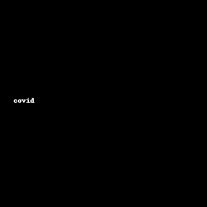
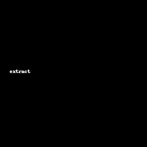

Projects
Patient Information System
End-to-end hospital data management system built using Python & Flask.
GitHubNews Category Predictor
NLP-based classification model for predicting news categories using ML pipelines.
GitHub

COVID-19 Forecasting
Time-series modeling and forecasting using statistical and ML approaches.
GitHub

Extractor Web Application (Flask)
Web app for text extraction and file processing using Python & Flask.
GitHub